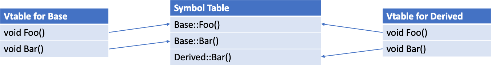
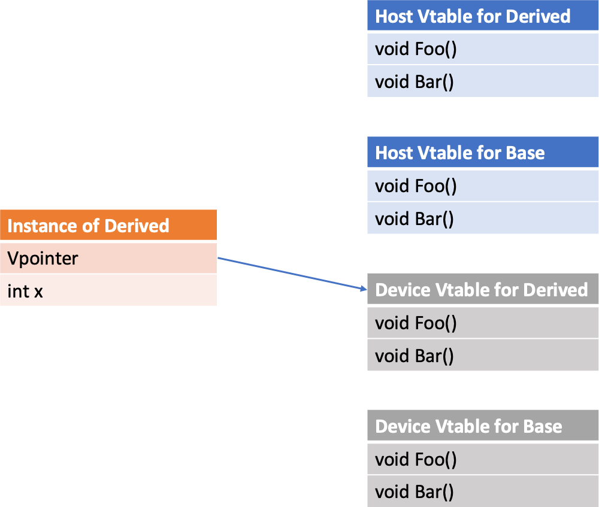

14. Kokkos and Virtual Functions#
Warning
Using virtual functions in parallel regions is not a good idea in general. It often degrades performance, requires specific code for a correct execution on GPU, and is not portable on every backend. We recommend to use a different approach whenever possible.
Due to oddities of GPU programming, the use of virtual functions in Kokkos parallel regions can be complicated. This document describes the problems you’re likely to face, where they come from, and how to work around them.
Please note that virtual functions can be executed on the device for the following backends:
Cuda; and
HIP (with a limitation, as explained at the end).
Especially, SYCL 2020 cannot handle virtual functions.
The Problem#
In GPU programming, you might have run into the bug of calling a host function from the device. A similar thing can happen for subtle reasons in code using virtual functions. Consider the following serial code:
class Base {
public:
void Foo() {}
virtual void Bar() {}
};
class Derived : public Base {
public:
void Bar() override {}
};
int main(int argc, char *argv[]) {
// create
Base* instance = new Derived();
// use
for (int i = 0; i < 10; i++) {
instance->Bar();
}
// cleanup
delete instance;
}
This code is more complex to port on GPU than it looks like.
Using a straightforward approach, we would annotate functions with KOKKOS_FUNCTION, replace the for loop with parallel_for and copy instance on the GPU memory (not disclosing how for now).
Then, we would call Bar() inside the parallel_for.
At a glance this should be fine, but it will typically crash, however, because instance will call a host version of Bar().
To understand why, we need to understand a bit about how virtual functions are implemented.
Vtables, Vpointers, Very annoying with GPUs#
Virtual functions allow a program to handle Derived classes through a pointer to their Base class and have things work as they should. To make this work, the compiler needs some way to identify whether a pointer which is nominally to a Base class really is a pointer to the Base, or whether it’s really a pointer to any Derived class. This happens through Vpointers and Vtables. For every class with virtual functions, there is one Vtable shared among all instances, this table contains function pointers for all the virtual functions the class implements.

Okay, so now we have Vtables, if a class knows what type it is, it could call the correct function. But how does it know?
Remember that we have one Vtable shared amongst all instances of a type. Each instance, however, has a hidden member called the Vpointer, which the compiler points at construction to the correct Vtable. So a call to a virtual function simply dereferences that pointer, and then indexes into the Vtable to find the precise virtual function called.

Now that we know what the compiler is doing to implement virtual functions, we’ll look at why it doesn’t work with GPU’s.
Credit: the content of this section is adapted from this article of Pablo Arias.
Then why doesn’t the straightforward approach work?#
The reason why the straightforward approach described above fails is that when dealing with GPU-compatible classes with virtual functions, there isn’t one Vtable, but two. The first holds the host version of the virtual functions, while the second holds the device functions.

Since we construct the class instance on the host, its Vpointer points to the host Vtable.

We faithfully copied all of the members of the class on the GPU memory, including the Vpointer happily pointing at host functions, which we then call on the device.
Make it work#
The problem here is that we are constructing the instance on the host. If we were constructing it on the device, we’d get the correct Vpointer, and thus the correct functions. Note that this would allow to call virtual functions on the device only, not on the host anymore.
Therefore, we first allocate memory on the device, then construct on the device using a technique called placement new:
#include <Kokkos_Core.hpp>
class Base {
public:
void Foo() {}
KOKKOS_FUNCTION
virtual void Bar() {}
};
class Derived : public Base {
public:
KOKKOS_FUNCTION
void Bar() override {}
};
int main(int argc, char *argv[])
{
Kokkos::initialize(argc, argv);
{
// create
void* deviceInstanceMemory = Kokkos::kokkos_malloc(sizeof(Derived)); // allocate memory on device
Kokkos::parallel_for("initialize", 1, KOKKOS_LAMBDA (const int i) {
new (static_cast<Derived*>(deviceInstanceMemory)) Derived(); // initialize on device
});
Base* deviceInstance = static_cast<Derived*>(deviceInstanceMemory); // declare on this memory
// use
Kokkos::parallel_for("myKernel", 10, KOKKOS_LAMBDA (const int i) {
deviceInstance->Bar();
});
// cleanup
Kokkos::parallel_for("destroy", 1, KOKKOS_LAMBDA (const int i) {
deviceInstance->~Base(); // destroy on device
});
Kokkos::kokkos_free(deviceInstanceMemory); // free
}
Kokkos::finalize();
}
We first use the KOKKOS_FUNCTION macro to make the methods callable from a kernel.
When creating the instance, note that we introduce a distinction between the memory that it uses, and the actual instantiated object.
The object instance is constructed on the device, within a single-iteration parallel_for, using placement new.
Since the kernel does not have a return type, we use a static cast to associate the object type with the memory allocation.
For not trivially destructible objects the destructor must explicitly be called on the device.
After destructing the object in a single-iteration parallel_for, the memory allocation can be finally release with kokkos_free.
This code is extremely ugly, but leads to functional virtual function calls on the device. The Vpointer now points to the device Vtable. Remember that those virtual functions cannot be called on the host anymore!

For a full working example, see the example in the repo.
What if I need a setter that works with host values?#
The first problem people run into with this is when they want to set some fields based on host data. As the object instance resides in device memory, it might not be accessible by the host. But the fields can be set within a parallel_for on the device. Nevertheless, this requires that the lambda or functor that sets the fields on the device must have access to the host data.
The most productive solution we’ve found in these cases is to allocate the object instance in SharedSpace, which allows to have the object constructed on the device, and then to set fields on the host:
// create
void* deviceInstanceMemory = Kokkos::kokkos_malloc<Kokkos::SharedSpace>(sizeof(Derived)); // allocate on shared space
// ...
deviceInstance->setAField(someHostValue); // set on host
The setter is still called on the host.
Beware that this is only valid for backends that support SharedSpace.
Keep in mind that, despite using a “unified” SharedSpace, you still have to resort to placement new in order to have the correct Vpointer and hence Vtable on the device!
But what if I do not really need the Vtables on the device side?#
Consider the following example which calls the virtual function Bar() on the device from a pointer of derived class type.
One might think this should work because no Vtable lookup on the device is necessary.
#include <Kokkos_Core.hpp>
class Base {
public:
KOKKOS_FUNCTION
virtual void Bar() const = 0;
};
class Derived : Base {
public:
KOKKOS_FUNCTION
void Bar() const override {
Kokkos::printf("Hello from Derived\n");
}
void apply() {
Kokkos::parallel_for("myLoop", 10,
KOKKOS_CLASS_LAMBDA (const size_t i) { this->Bar(); }
);
}
};
int main(int argc, char *argv[])
{
Kokkos::initialize(argc, argv);
{
auto derivedPtr = std::make_unique<Derived>();
derivedPtr->apply();
Kokkos::fence();
}
Kokkos::finalize();
}
Why is this not portable?#
Inside the parallel_for, Bar() is called. As Derived derives from the pure virtual class Base, the Bar() function is marked override.
On ROCm (at least up to 6.0) this results in a memory access violation.
When executing the this->Bar() call, the runtime looks into the Vtable and dereferences a host function pointer on the device.
But if that is the case, why does it work with NVCC?#
Notice that the parallel_for is called from a pointer of type Derived and not a pointer of type Base pointing to an Derived object.
Thus, no Vtable lookup for the Bar() would be necessary as it can be deduced from the context of the call that it will be Derived::Bar().
But here it comes down to how the compiler handles the lookup. NVCC understands that the call is coming from an Derived object and thinks: “Oh, I see, that you are calling from an Derived object, I know it will be the Bar() in this class scope, I will do this for you”.
ROCm, on the other hand, sees the call and thinks “Oh, this is a call to a virtual method, I will look that up for you”, failing to dereference the host function pointer in the host virtual function table.
How to solve this?#
Strictly speaking, the observed behavior on NVCC is an optimization that uses the context information to avoid the Vtable lookup. If the compiler does not apply this optimization, you can help in different ways by providing additional information. Unfortunately, none of these strategies are fully portable to all backends.
Tell the compiler not to look up any function name in the Vtable when calling
Bar()by using qualified name lookup. For this, you tell the compiler which function you want by spelling out the class scope in which the function should be found e.g.this->Derived::Bar();. This behavior is specified in the C++ standard. Nevertheless, some backends are not fully compliant to the standard.Changing the
overridetofinalon theBar()in theDerivedclass. This tells the compilerBar()is not changing in derived objects. Many compilers do use this in optimization and deduce which function to call without the Vtable. Nevertheless, this might only work with certain compilers, as this effect of addingfinalis not specified in the C++ standard.Similarly, the entire derived class
Derivedcan be markedfinal. This is compiler dependent too, for the same reasons.
Questions/Follow-up#
This is intended to be an educational resource for our users. If something doesn’t make sense, or you have further questions, you’d be doing us a favor by letting us know on Slack or GitHub.